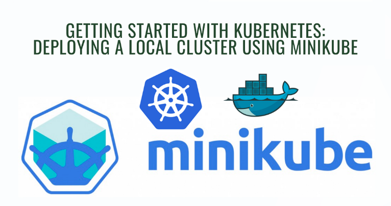
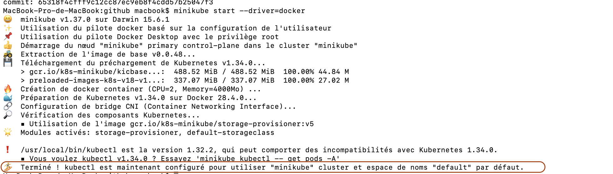
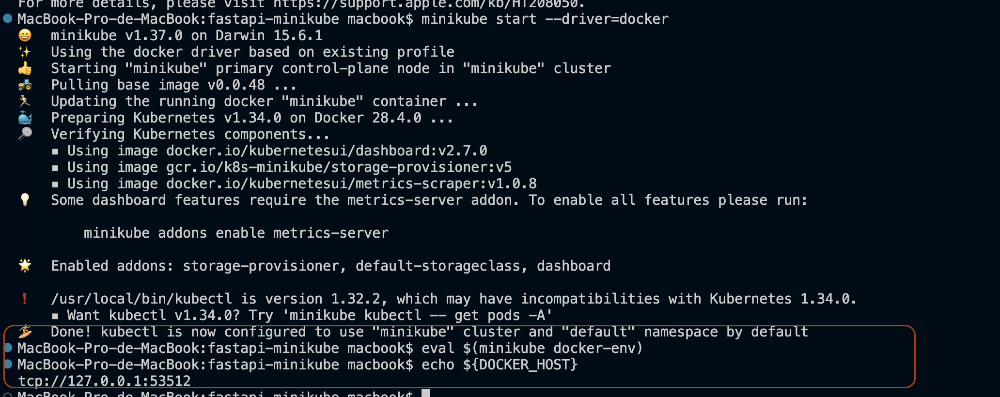
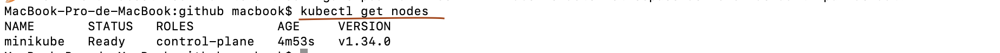
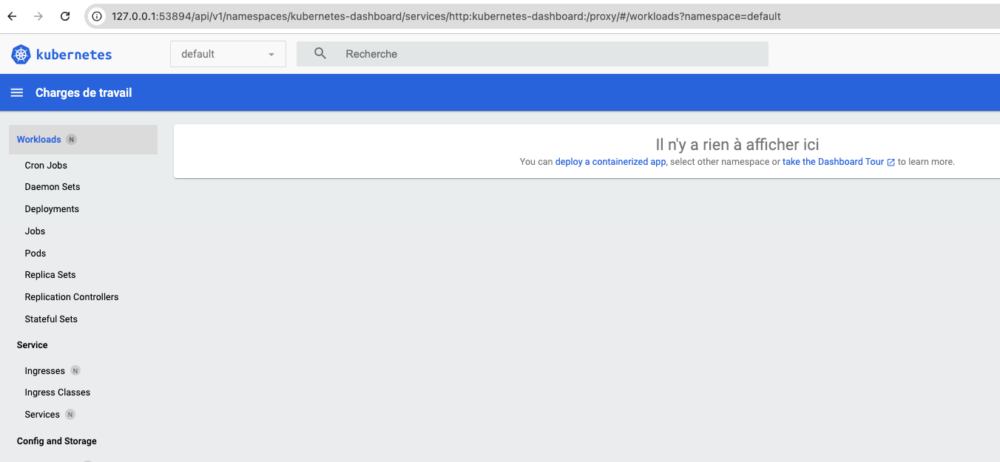
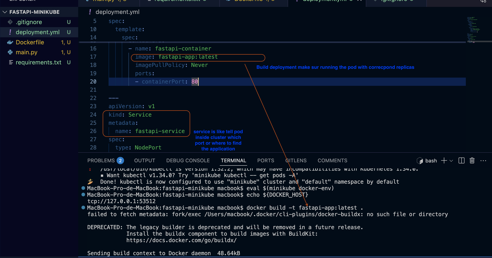
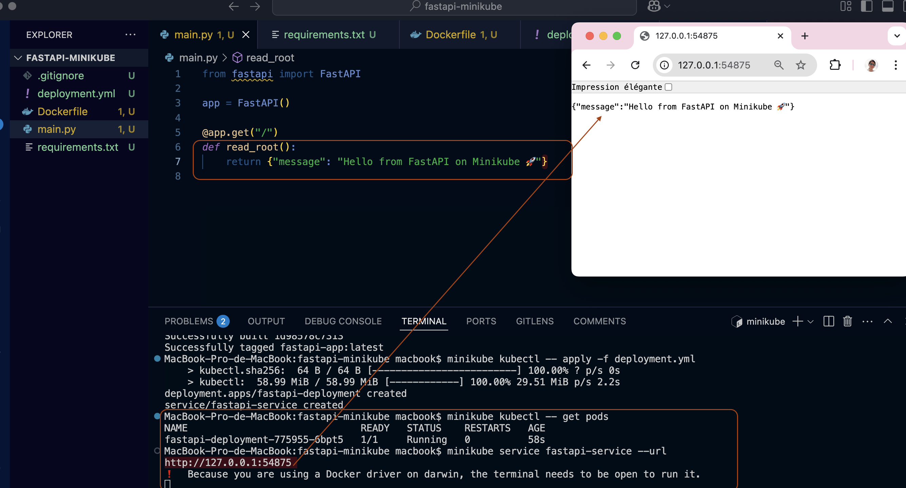
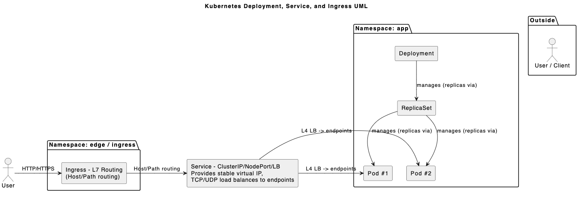

Jouer avec Kubernetes à coût zéro en local : Minikube
8 Octobre 2025, 10:00 CEST
DevOpsDéployez rapidement un cluster K8s local, lancez votre premier pod et comprenez les bases (Deployment, Service, Ingress)
Lorsque votre projet commence à contenir plusieurs microservices, orchestrer leurs exécutions, garantir leur disponibilité et les rendre observables devient vite complexe. Docker crée des images, mais il manque un planificateur capable d'assurer la stabilité et la résilience — c'est précisément le rôle de Kubernetes. Dans cet article, je vous guide pas à pas pour utiliser Minikube : un cluster Kubernetes léger, mono-nœud et local, parfait pour l'apprentissage et les expérimentations.

Qu'est-ce que Minikube ?
Minikube est un outil open source qui simule un cluster Kubernetes à un seul nœud sur votre machine. Son principal atout : il est rapide à démarrer, simple à utiliser et idéal pour se former sans provisionner d'infrastructure cloud.
- Usage : apprentissage, tests locaux, CI légère.
- Avantage : pas besoin d'un cloud — tout tourne en local (driver Docker, VirtualBox, Hyperkit...)
- Open source et gratuit.
Préparation de l'environnement
Avant de commencer, assurez-vous d'avoir :
- WSL 2 (si vous êtes sur Windows)
- Docker Desktop installé et opérationnel (nous l'utiliserons comme driver)
- Minikube installé et accessible depuis votre PATH
⚠️ Si vous avez un ancien cluster Minikube, supprimez-le d'abord : minikube delete
Exemple : sur macOS (Homebrew déjà présent)
- Confirmer Docker :
docker info - Installer Minikube :
brew install minikube - Vérifier la version :
minikube version

Démarrer Minikube (driver Docker)
La façon la plus simple si Docker tourne déjà :
minikube start --driver=dockerAu premier démarrage Minikube :
- Télécharge l'image Kubernetes nécessaire
- Crée un cluster mono-nœud local
- Configure
kubectlpour utiliser le contexteminikube

Astuce : pour utiliser le Docker interne de Minikube (utile si vous voulez builder une image directement dans l'environnement Minikube) :
eval $(minikube docker-env)echo ${DOCKER-HOST}Vérifier l'état du cluster
Après le démarrage, vérifiez les nœuds :

kubectl get nodesVous devriez voir votre nœud minikube en Ready.
Ouvrir le Dashboard (optionnel)
Minikube propose un dashboard simple :

minikube dashboardLe navigateur s'ouvrira avec une UI graphique pratique pour visualiser Pods, Deployments et Services.
Créer l'image & écrire le YAML de Deployment
Structure de projet recommandée (exemple FastAPI) :
fastapi-minikube/
├── main.py
├── requirements.txt
├── Dockerfile
└── deployment.yml
Builder l'image (après avoir fait eval $(minikube docker-env) si vous voulez que l'image soit disponible dans le Docker de Minikube) :

docker build -t fastapi-app:latest .Exemples de morceaux de deployment.yml (schéma simplifié) :
apiVersion: apps/v1
kind: Deployment
metadata:
name: fastapi-deployment
spec:
replicas: 2
selector:
matchLabels:
app: fastapi
template:
metadata:
labels:
app: fastapi
spec:
containers:
- name: fastapi
image: fastapi-app:latest
ports:
- containerPort: 80
apiVersion: v1
kind: Service
metadata:
name: fastapi-service
spec:
selector:
app: fastapi
ports:
- protocol: TCP
port: 80
targetPort: 80
type: NodePortDéployer sur Minikube et vérifier
- Appliquer le YAML :
minikube kubectl -- apply -f deployment.yml - Voir l'état des pods :
minikube kubectl -- get pods - Vérifier les services :
minikube kubectl -- get svc - Ouvrir l'URL du service local :
minikube service fastapi-service --url

✅ Si les Pods passent en Running : succès !
Principaux composants et comment ils s'articulent
Trois composants principaux forment le flux d'accès complet :
- Deployment — définit l'état désiré des Pods (réplicas, image, stratégie de mise à jour).
- Service — expose un ensemble de Pods via un point d'accès stable (ClusterIP, NodePort, LoadBalancer).
- Ingress — route le trafic HTTP/HTTPS externe vers les services appropriés (requiert un Ingress Controller).

Schématiquement :
Utilisateur externe → Ingress → Service → Pod (géré par Deployment)Notes et bonnes pratiques
- Définissez
readinessProbeetlivenessProbepour éviter les interruptions pendant les mises à jour. - Pour les tests d'Ingress sur Minikube :
minikube addons enable ingress. - Favorisez
ClusterIP+Ingresspour simuler un routage réaliste en production. - Ne codez jamais en dur des secrets dans l'image — utilisez
SecretetConfigMap.
Tableau récapitulatif des étapes
| Étape | Commande / Outil | But |
|---|---|---|
| Préparation | Docker, Minikube | Assurer la disponibilité du runtime |
| Démarrage cluster | minikube start --driver=docker |
Créer un cluster local |
| Builder image | docker build -t fastapi-app:latest . |
Préparer l'image pour le déploiement |
| Déploiement | minikube kubectl -- apply -f deployment.yml |
Créer Deployment + Service |
| Exposition | minikube service fastapi-service --url |
Obtenir l'URL locale pour tester |
Configuration & Secrets
Kubernetes propose ConfigMap (config non sensible) et Secret (données sensibles) pour séparer la configuration du code. Évitez les variables codées en dur et utilisez les mécanismes de K8s pour injecter la configuration à runtime.
Conclusion
Minikube est un outil puissant et léger pour se familiariser avec Kubernetes sans coûts cloud. En maîtrisant Deployment, Service et Ingress, vous apprendrez à orchestrer, exposer et sécuriser vos microservices localement avant d'aller en production.
Références
Partagez cet article :